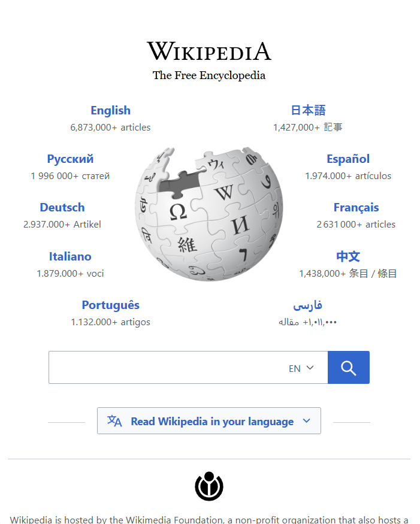
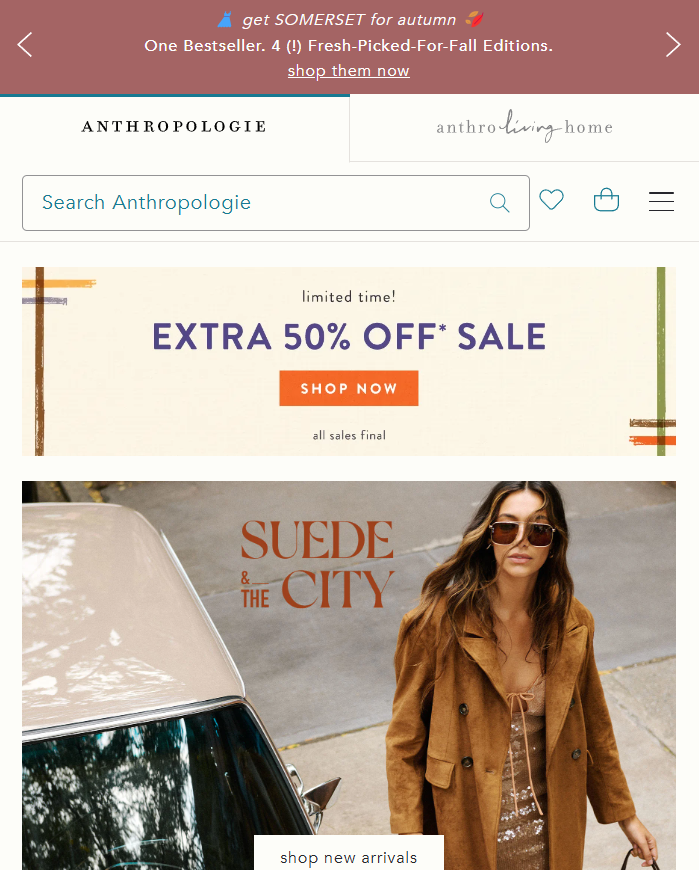

White Space and Clean Design
Wikipedia
wikipedia.org
White space and clean design is crucial for making things appear more appealing. This is a common tactic used by educational organisations like Wikipedia. In this example, Wikipedia uses white space to invite the viewer into the middle of the page where one can choose their preferred language or begin searching. White space and clean design is another tool used to offer a sense of ease to the viewer. This is especially true in this instance since Wikipedia is a known source of vast amounts of information, but the viewer is not overwhelmed by this because of its great use of this principle.
Hick's Law
Apple Inc.
apple.com
Hick's Law is a design principle we experience subconsciously. It happens when the more choices a viewer is presented with, the longer it takes to come to a decision. This is especially true with retail. This is espcially true for the technology mogul, Apple. Here, the only buttons available to click on are four in the navigation and two for the first product on the screen. By keeping the number of items to click on below the number five, it makes it easier and therefore faster to make a decision on what to click on next. And by giving the viewer no other choice than to learn more about iPhone 16 Pro or to buy it cuts out the decision on what to buy from their website.
Visual Hierarchy
Anthropolgie
anthropologie.com
Visual hierarchy is one of the most important design principles because it is what directs the eye of the audience. By making fonts bigger or by adding contrast draws attention to the sucject you want the viewer to see the most. Anthropologie makes great use of this principle on their home page. They use images, banners, typeface, and the font size to create visual hierarchy. Just from looking at this image, we understand that the sale is the most important thing to look at because the banner is in the middle of the screen and the font size is the largest here. Next, our eye goes to the image of their 'Suede and the City' line with the 'Shop new arrivals' button. Visual hierachy is critical in retail because it guides the desired audience to click on certain things by highlighting it by design.